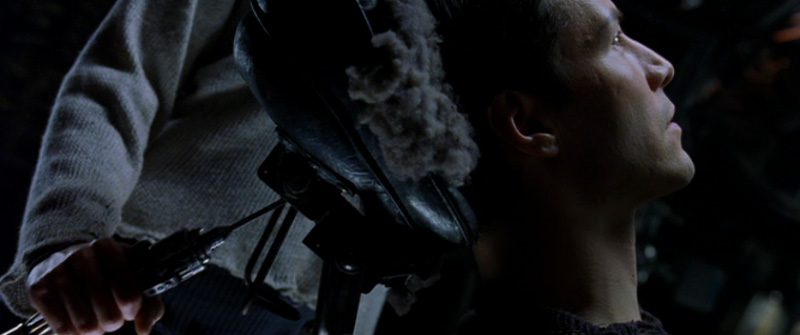

Bedre blir det ikke.
For oss mennesker.
Bare grafikken foran øynene våre blir bedre.
Men jeg må nok også skuffe deg på grafikken(men langt frem i tid; da vi mest sannsynlig ikke blir skuffet med det første; da ny teknologi alltid imponerer).
Da de mest avanserte grafikkortene i sin tid (og når de er fullt utviklet) vil slutte å bli utviklet. Når de når et punkt for det mest realistisk-visuelle innvirkningsfulle innspillet foran øynene våre; noe som betyr at grafikken er så god at når du tar på deg et sett "googles" som viser deg den samme visuelle virkeligheten, som den samme når du tar den av. Kult. Ja og A.I. av den tiden (i fremtiden) vil ta avgjørelsen om at det ikke er noe poeng i videre utvikling av grafikkortet fordi den er utdatert og VR-grafikken har nådd sitt høyeste form for en visuell visjon for et menneske.
Og den eneste måten å bruke virtual reality er å sette den foran øynene dine. Ikke sant? Hvordan ellers skal du bruke virtual reality? Ved å "virkelig" gå inn i den virtuelle virkeligheten. Mer om det lenger ned.
Men la oss gå tilbake til måten du bruker virtual reality på. Spør deg selv hva som er den viktigste funksjonen til en virtuell verden som virkelig kan forbedre opplevelsen og føle at det er virkelighet? Greit; den eneste hindringen i denne utviklingen er grafikken. Ja, du har lyd, bevegelse og sånne ting; enkel utvikling, må jeg anta. Så konklusjonen er det eneste for at en virtuell virkelighet kan ha eller være noen form for en høy definisjon av et teknologisk leketøy; er grafikk. Og hvor er grafikk på vei nå? Bare se på hvilken som helst avansert datamaskin eller VR-hodesett, du ser det. Er det nær noen form for realistisk visjon? Når du ser og sammenligner med noe annet rundt deg; i den virkelige verden?
Ja, ja, det vil være morsomt, lærerikt, inspirerende og en måte å koble oss til andre mennesker som deg selv rundt om i verden og i en annen "virkelighet". Men kanskje dette er overhypet på en eller annen måte? Og årsaken bak det; er at det ikke blir bedre. Som med alle ting som er overkonsumert; at ting blir bedre over tid.
Og kanskje det er grunnen til at VR ikke er like populært som PlayStation og Xbox.
Ok, tilbake til "du er i selve den virtuelle virkeligheten." Det jeg mener er at du føler, berører, smaker, lukter, ser, akkurat som den virkelige verden, men i VR. Dette er slutten på begynnelsen av utviklingen. Bare sånn. Det begynner med noe som ikke blir bedre (VR i fremtiden med den høyeste grafikken) og slutter med den mest spektakulære, ville og superavanserte teknologien. Den virkelige "som du er der" virtuell virkelighet.
Ja, og det vil fungere akkurat som The Matrix(se filmen) ... (hvis du lurer på hvordan et super avansert VR kan muligens fungere). Kanskje ikke en så stor kabel festet bak på hodet, som drars inn og ut, noe mindre antar jeg.

Og ja, du har appene, spillene, den virtuelle opplevelsen som vil vokse eksponentielt og så videre. Men det endrer ikke det faktum at; grafikken; det så å si; bremser utviklingen. Og gjør alt ikke så mye entusiastisk.
Men fusjonsenergi. Å nevne noe helt på motsatt siden av ting. Er der ting; det daglige livet, transport eller alt/noe du foretar på planeten jorden; er i ferd med å forandre seg til det høyeste nivået av hvilken som helst maskin eller teknologisk enhet du vil ha opplevd inntil nå og frem i tid. (bortsett fra kvantecomputere forresten, når dette også når en viss grad av funksjonalitet. )